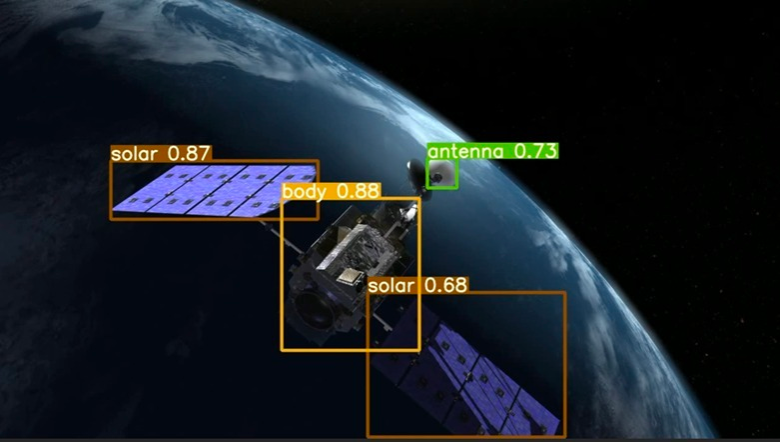
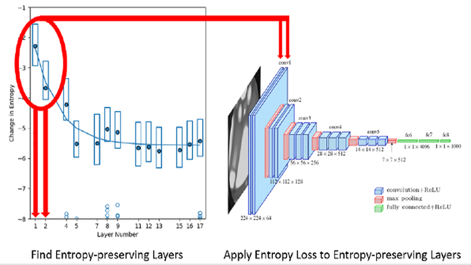

Space Perception and Autonomy
Computer vision and learning systems for inspection, tracking, navigation, and 3D reconstruction of spacecraft in challenging orbital environments, including onboard perception under flight-relevant constraints.
The NEural TransmissionS (NETS) Lab builds machine learning systems for scientific and engineering problems where off-the-shelf methods break down. Our work focuses on computer vision, representation learning, and explainable AI, with an emphasis on understanding what models are actually learning and how to make those systems work under real operating constraints.
A central application area is space-based perception: enabling inspection, tracking, and 3D reconstruction of spacecraft in challenging orbital environments. These are safety-critical settings, where models must generalize reliably, be understood, and run onboard under strict power, memory, latency, and computational constraints, including low-SWaP deployment settings.
Work in the lab spans theory, modeling, embedded implementation, and deployment, with students working alongside collaborators from government and defense labs, commercial partners, and academic groups across disciplines. Projects involve contributors from high school through PhD working on shared research problems.
Computer vision and learning systems for inspection, tracking, navigation, and 3D reconstruction of spacecraft in challenging orbital environments, including onboard perception under flight-relevant constraints.
We study what deep models encode internally and develop methods to shape, interpret, and extract useful structure from learned representations.
Orbital digital twins, controllable synthetic sensor feeds, auto-annotation pipelines, and mixed real/sim experimental systems for rapid vision development and deployment testing.
Collaborative machine learning projects in science and engineering, including applications in quantum biology, aviation meteorology, and other data-rich domains where edge and resource-aware models matter.

Learning-based spacecraft perception for inspection, tracking, and 3D reconstruction in operationally challenging visual conditions, with an emphasis on onboard and low-SWaP deployment.

Methods for shaping latent structure, entropy flow, and ensemble diversity so models learn representations that are more interpretable, more efficient, and more transferable across space AI and other domains.
Digital twin pipelines for mission planning, synthetic scenario generation, and large-scale synthetic training data with built-in auto-annotation under controlled orbital conditions across LEO-to-GEO regimes.
We welcome students and collaborators interested in machine learning, computer vision, space systems, edge AI, scientific AI, and applied mathematics. If you are excited by rigorous, mission-driven research, we would be glad to hear from you.